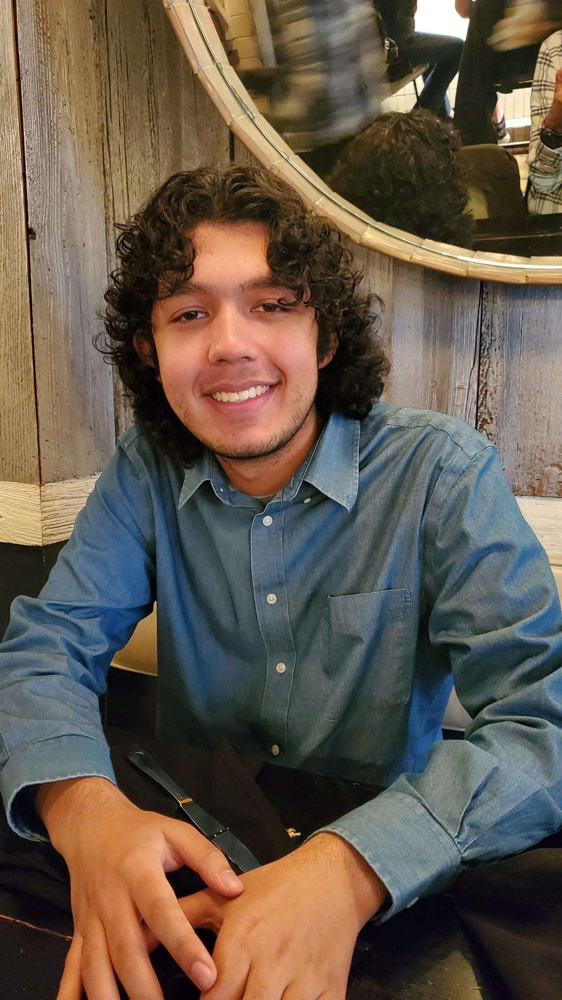

About Me
I am Nikolas Nanda, an aspiring filmmaker from Queens, New York most interested and focused on scriptwriting and directing. I am interested in creating stories that are extravagant and entertaining with relatable themes underneath.
Currently, I am a rising senior film student attending Stony Brook University for Computer Science with a minor in Filmmaking. I have taken multiple classes on filmmaking from visual storytelling to scriptwriting, and as a result I have some experience with directing, writing, editing, camerawork, and cinematography. I am constantly trying to improve and push the boundaries of my work.
In school, I am the Treasurer for the Tabletop Club and previously the Head Public Relations, where I designed visual material for the social media pages. I am also an On-Air Personality for WUSB 90.1 FM, where I host a weekly radio show about music and the history behind it.
I have had an interest in film ever since I was younger, enamored with the style of movies, especially modern action films. As I grew older, I have become fond of all sorts of genres, and my biggest focus is on thrillers, psychological dramas, and fantasy.